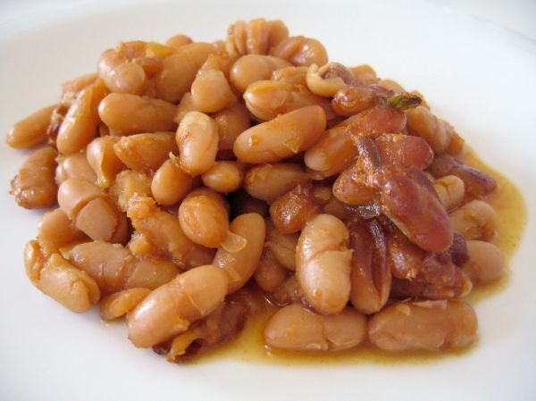

Molasses Baked Beans

Photo: marcelo träsel (CC BY-SA 2.0)
Canned baked beans dressed up with green pepper, onion, catsup, molasses, and spices, baked and topped with crumbled bacon.
Directions
- Mix all ingredients except bacon. Grease 2 quart casserole. Bake at 350 degrees for 55 minutes uncovered. Sprinkle bacon on and cook 5 minutes more.
- Mix all the ingredients except the bacon together.
- Grease a 2 quart casserole and add the bean mixture.
- Bake at 350 degrees for 55 minutes, uncovered.
- Sprinkle the cooked, crumbled bacon on top and cook 5 minutes more.
Goes well with
https://lizotte.cool/recipe/molasses-baked-beans.html